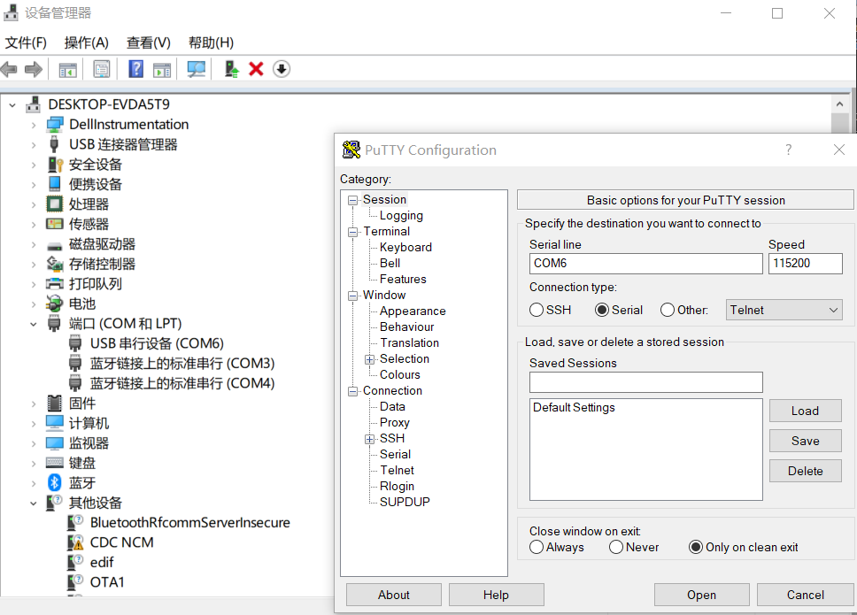

需要的设备
- Jetson Xavier NX 机器
- 一台安装有Ubuntu系统的主机，可以是虚拟机
- usb-microusb线用于连接板子和主机
- 鼠标、键盘、屏幕（最好有，没有就通过串口通信）
- 网线（一般可以不用）
安装操作系统
在主机上安装Ubuntu系统，一般是使用VMware虚拟机安装。需要根据要安装在jetson上的系统版本选择对应的主机上的Ubuntu系统系统版本。例如安装JetPack4.x就选择Ubuntu18.0；安装JetPack5.x就选择Ubuntu20.0。
在Ubuntu系统中安装sdkmanager，注册NVIDIA账号。
将板子设置为recovery模式，就是使用一根线将板子上面的那排引脚导数第二个和倒数第三个短接起来（使用GND和REC标记），接通电源， 将板子通过usb-microusb线连接到主机。
在Ubuntu系统中发现连接的USB设备后(lsusb可以查看)，运行sdkmanager命令可以进入安装流程。在安装流程中，一般我们只安装系统，不安装其他东西，即在
Step 01中只勾上第一行的Jetson，第二行的Target Hardware，第三行的Linux（注意JetPack版本）。在Step 03中只安装Jetson OS，不选择Jetson SDK Components, 这部分我们后面安装。同时在Step 03中的Setup中，由于没有网线，选择Manual Setup，同时设置username和password。
开机设置
这里分为两种：有设备和无设备
有设备
如果有鼠标、键盘和屏幕这几个设备，就直接连到Jetson 板子上，然后启动，连接网络。
没有设备
在windows中，使用PuTTY通过usb-microusb线连接进入板子之中。就是将usb-microusb连接到Windows后，打开PuTTY，进行如下图所示的设置，就可以创建连接，进入到刚才在Jetson安装的系统了。这里连接的串口号码就是USB连接的串口，在设备管理器中查看。 
然后配置网络，连接wifi。参考中的第三步配置网络，到其中的第5小步即可（使用的是nmcli命令）。
设置从NVME开机启动
- 格式化磁盘并设置分区
1
2
3
4
5
6
7
8
9
10
11
12
13sudo gdisk /dev/nvme0n1
command (? for help): o
deletes all partitions and creates a new protective MBR
command (? for help): n
Partition number (1-128, default 1): 1
First sector (34-250069646, default = 2048) or {+-}size{KMGTP}:
Last sector (2048-250069646, default = 250069646) or {+-}size{KMGTP}: +110G #这里表示这个分区的大小是110G，不设置默认剩余全部
Command (? for help): c
Enter name: nx110nvme
Command (? for help): w
Final checks complete. About to write GPT data. THIS WILL OVERWRITE EXISTING
sudo mkfs.ext4 /dev/nvme0n1p1 #设置分区格式 - 设置开机启动 注：在有屏幕、键盘、鼠标时也可以使用图形界面，参考
1
2
3
4git clone https://github.com/jetsonhacks/rootOnNVMe.git
cd rootOnNVMe
./copy-rootfs-ssd.sh #复制文件到nvme
./setup-service.sh #设置开机启动，重启生效
安装JetPack
1 | sudo apt update |
参考:https://docs.nvidia.com/jetson/jetpack/install-jetpack/index.html